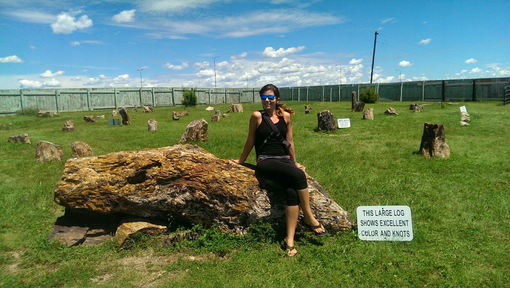

<main class="mdl-layout__content">
  <div class="mdl-grid portfolio-max-width">
    <div class="mdl-cell mdl-cell--12-col mdl-card mdl-shadow--4dp">
      <div class="mdl-card__title">
        <h2 class="mdl-card__title-text">About</h2>
      </div>
      <div class="mdl-card__media">
        
      </div>
      <div class="mdl-grid portfolio-copy">
        <h3 class="mdl-cell mdl-cell--12-col mdl-typography--headline">My name is Elana Kopelevich.</h3>
        <div class="mdl-cell mdl-cell--8-col mdl-card__supporting-text no-padding ">
          <p>I am a web developer with marketing and design skills. I am about to finish the Galvanize Full Stack program in Denver, CO. As I approach graduation, I'm looking to start a conversation with a forward-thinking company that seeks an honest, determined, junior developer.</p>

          <p>I have a solid foundation semantic HTML5, responsive CSS3, Sass, JavaScript, jQuery, Angular, React, Node, Express, PostgreSQL, Knex, RESTful Design, Git and Agile Methodologies. I’ve also explored Ruby on Rails, Python and Swift. I am comfortable asking targeted questions, finding answers in documentation and experimenting with solutions a logical way.</p>

          <p>Prior to entering the world of web development, I had a successful career in marketing. In that past life, I brought together unique skill sets in graphic design, copywriting, illustration, communications and strategic management to drive rapid growth at several organizations. I've worked in corporate and start-up style environments and I've proven to be adaptable, resourceful and helpful on every team.</p>

          <p>I enjoy (extremely) casual sports, illustration, design, writing, reading and drinking good coffee. I also care a lot about animals, education and clean energy. Most importantly, I am passionate about learning.</p>
        </div>
      </div>
    </div>
  </div>
</main>
